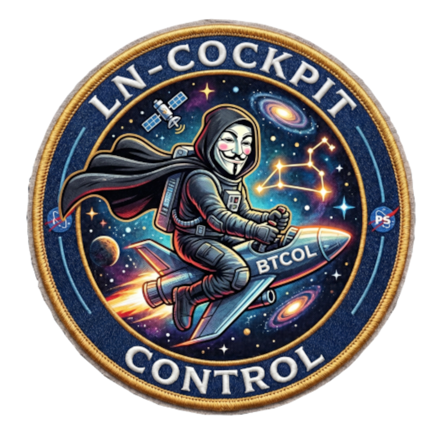

⚡ LN·COCKPIT
Nodo
—
Sync
—
Bloque
—
Peers
—
Wallet
—
Uptime 24h
—
Hora
—

📡 Canales
—
activos /
—
total
💧 Liquidez Local
—%
Local / (Local+Remote)
⚡ Capacidad Total
—
sats en canales
🧟 Zombies
—
— sats inactivos
📈 Fees Ganadas (cum.)
—
msat enrutamiento
📉 Fees Pagadas (cum.)
—
msat rebalanceos
⚡ Forwards (cum.)
—
Vol:
—
sats
⚖️ Ratio Rebalan/Enrut.
—
fees_paid / fees_earned
🎯 Efic. Capital
—
sats_enrutados / capacidad
📊 Fees Ganadas vs Pagadas — 7 días
Sin datos
⚡ Forwards por hora — 24h
Sin datos
💰 Net Profit 7d
—
fees_earned - fees_paid
🕒 Último Snapshot
—
Datos en tiempo real